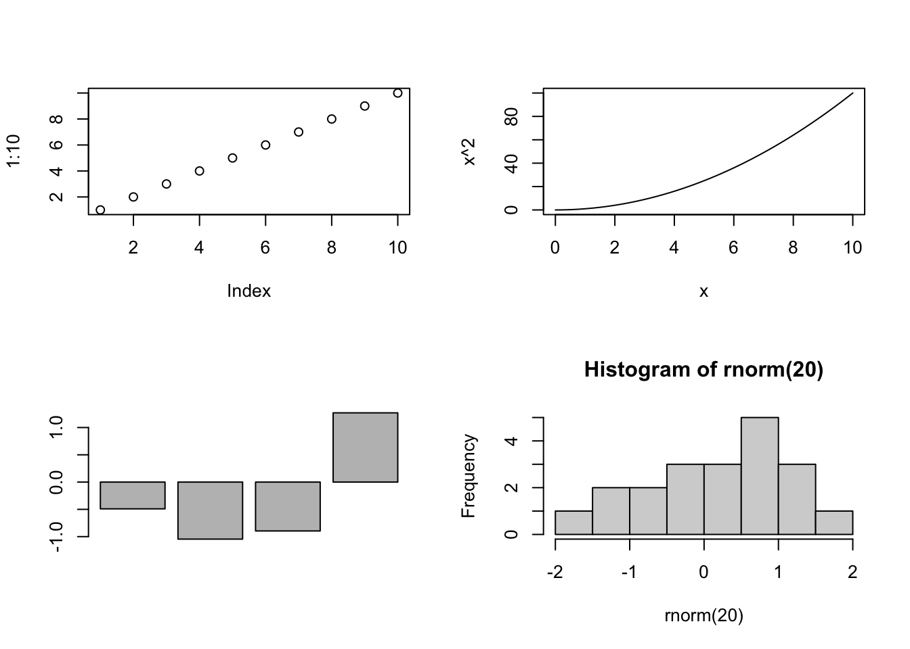

Advanced Graphing
Ben Miner and Matthew Zinkgraf
2022-09-21
Advanced Graphing
In this lab, you will learn a ton about plotting in R.
1 High-level plotting functions
High-level plotting functions will create entire graphs for you. You have already practiced with some of the high-level plotting functions like plot(), curve(), and hist() in previous labs. In this lab, we will explore how to modify or add to high-level plots, and how to build plots from the low-level plotting functions. Below is a table of some of the common high-level plotting functions that people use in the base package.
- plot()
- Creates a plot that is appropiate for the data.
- hist()
- Creates a histogram.
- barplot()
- Creates a barplot.
- boxplot()
- Creates a boxplot.
- curve()
- Creates a line graph based on the supplied function.
- assocplot()
- Creates a plot of a contigency table that displays the deviations from independence.
- assocplot()
- Creates a plot of a contigency table that displays the deviations from independence.
- cdplot()
- Creates a plot of the conditional densities. Think of a plot that shows how the risk of mortality changes with the amount of a harzardous chemical.
- coplot()
- Creates a conditional plot.
- fourfoldplot()
- Creates a plot to visualize the differences among 2 or more factors when to of the factors only have two levels.
- contour()
- Creates a contour plot or addes contour lines to a plot.
- matplot()
- Creates a plot from data in the columns of a matrix.
- mosaicplot()
- Creates a mosaic plot.
#Low-level plotting functions Below is a table of many of the common low-level plotting functions that people use.
- plot.new()
- Creates a blank plot.
- plot.window()
- Adds a plotting area and coordinates to a plot.
- axis()
- Adds an axis to a plot.
- title()
- Adds labels and titles to a plot.
- box()
- Creates a box around a plot area.
- text()
- Adds text to a plot.
- mtext()
- Adds text to the margins of a plot.
- legend()
- Adds a legend to a plot.
- points()
- Adds points to a plot.
- lines()
- Adds a line to a plot.
- segment()
- Adds connected segments to a plot.
- abline()
- Adds a line across the entire plotting area.
- rect()
- Adds a rectangle to a plot.
- symbols()
- Adds symbols, like circle, stars, and thermometers, to a plot.
- polygon
- Adds a polygon to a plot.
- rug()
- Adds a data rug to the plot.
- jitter()
- Adds a small amount of variation to the data. It is used to see data when there are many observations with the small value.
- par()
- Sets the graphing parameters (see the section below on this function).
Let’s first start with creating a high-level plot and then adding stuff to it. Remember we already went over how to change some of the basic aspects of a plot.
#Create some data
#If you want the data to look just like mine then you can use the function set.seed()
set.seed(1)
x <- sort(runif(100, 0, 25)); y <- x*2 + rnorm(100, sd = 4)
plot(y ~ x,
pch = 16,
col = "steelblue",
cex = 1.4
)Now that we have a basic graph, let’s use some of the low-level functions to add stuff to this graph. Add one line at a time and study carefully what happened. It should be clear why you included each argument in each function.
1.1 Add text to a plot
You can use the functions text() and mtext() to add text to a graph.
#Add text
text(5, 45, "A", cex = 2)
text(5, 45, letters[2:5], pos = 1:4, col = hcl(seq(60, 360, length.out = 4)))
mtext("Bottom", side = 1) #Side 1 is the bottom
mtext("Left", side = 2, line = 2) #Side 2 is the left
mtext("Top", side = 3, line = 1) #Side 3 is the top
mtext("Right", side = 4, adj = 1) #Side 4 is the right1.2 Add points to a plot
You can use the function points() to add points to a plot.
points(x, y+10, pch = 15, col = "yellowgreen")
#Create a shadow effect
#First plot the shadow by shifting the points slightly
points(x+0.2, y+0.3, pch = 16, col = "grey", cex= 1.4)
#Replot the original points
points(x, y, pch = 16, col = "steelblue", cex = 1.4)1.3 Add lines to a plot
Use the function abline() to add lines to a plot. Remember you need two parameters to describe a straight line, the y-intercept and the slope. The argument a is the intercept and the argument b is the slope.
abline(a = 0, b = 2)
abline(v = seq(0, 25, by = 5), col = rgb(0.5, 0.5, 0.5, alpha = 0.5))
abline(h = seq(0, 50, by = 10), col = rgb(0.5, 0.5, 0.5, alpha = 0.5))Notice that if you give these functions a vector then they will add more than one line, point, text, etc. For example, look at the last three calls to the function abline(). The first time it was called, it drew one line. However, the next two line drew multiple lines because they contained vectors for each argument.
1.4 Adding a legend
Use the function legend() to add a legend to a plot.
I will recreate our plot so it isn’t so cluttered and there is some space for the legend.
plot(y ~ x,
ylim = c(0, 70), #I increased the ylim so there was space for the legend
pch = 16,
col = "steelblue"
)
points(x, rev(y), pch = 15, col = "yellowgreen")
legend(x = 10, y = 70, legend = c("Green", "Blue"), pch = 15:16, col = c("yellowgreen", "steelblue"))Add symbols to a plot
Rarely do I need to use this function to add symbols to a plot, and the arguments are a bit odd. So, I recommend that you only look it over after you do the rest of the lab.
Use the function symbols() to add symbols to a plot. This function will add circles, squares, rectangles, stars, thermometers, and boxplots to a plot. However, by default it will create a new plot, but you can add the argument add = T if you want to add symbols to an existing plot. I will illustrate both.
Let’s first create a new plot with function symbols(). In this first example, let’s create some circles of different sizes on a plot. We will need to tell R where to put each circle, and the size of each circle For circles you only need to give the radius of each circle. So, let’s plot three circles. The first will be at (1,1) with a size of 0.5. The second will be at (1,2) with a size of 1.0. The third will be at (2,2) with a size of 2. I need to change the default for the argument inches because by default the function will scale the largest size to 1 inch–I don’t know why this is the default. For fun, I will color each circle with a color randomly pulled from the known colors in R with the function sample().
xs <- c(1, 1, 2)
ys <- c(1, 2, 2)
sizes <- c(0.25, 0.5, 0.75)
myColors <- sample(colors(), 3)
symbols(xs, ys, circles = sizes, bg = myColors, ylim = c(0,4), xlim = c(0, 4), inches = F)We can also plot “stars”. For circles, we just need a vector of the radii. For stars, we need to give radii of each ray. I use the function cbind(), which stands for column bind, to create a matrix out of several vectors. This matrix has the radii for each ray of the “star”. Notice that the matrix I created below only has three columns. So, the “stars” will only have three points.
xs <- c(1, 1, 2)
ys <- c(1, 2, 2)
myStars <- cbind(c(0.25, 0.40, 0.75), c(0.25, 0.40, 0.75), c(0.25, 0.40, 0.75))
myStars## [,1] [,2] [,3]
## [1,] 0.25 0.25 0.25
## [2,] 0.40 0.40 0.40
## [3,] 0.75 0.75 0.75myColors <- sample(colors(), 3)
symbols(xs, ys, stars = myStars, bg = myColors, ylim = c(0,4), xlim = c(0, 4), inches = F)Here are “stars” with 5 rays, which I specify with a matrix with 5 columns. Notice the radius of each ray doesn’t have to be equal.
xs <- c(1, 1, 2)
ys <- c(1, 2, 2)
myStars <- cbind(
c(0.25, 0.80, 0.75),
c(0.25, 0.40, 0.75),
c(0.50, 0.40, 0.75),
c(0.25, 0.40, 0.75),
c(0.50, 0.40, 0.75)
)
myColors <- sample(colors(), 3)
symbols(xs, ys, stars = myStars, bg = myColors, ylim = c(0,4), xlim = c(0, 4), inches = F)We can also create thermometers. For thermometers, we need to create a matrix with 3 or 4 columns. If our matrix has three columns then, the first two specify the width and height. The third column specifies the proportion of the thermometer that should be filled, and thus you should use values between 0 and 1.
xs <- c(1, 2, 3)
ys <- c(1, 2, 2.3)
myThermos <- cbind(
c(0.25, 1.0, 0.10),
c(0.25, 1.0, 0.75),
c(0.50, 0.7, 0.50)
)
myColors <- sample(colors(), 3)
symbols(xs, ys, thermometers = myThermos, fg = myColors, ylim = c(0,4), xlim = c(0, 4), inches = F)If I include a fourth column in the matrix then the third and fourth columns indicate the lower and upper bounds of the filled box.
xs <- c(1, 2, 3)
ys <- c(1, 2, 2.3)
myThermos <- cbind(
c(0.25, 1.0, 0.1),
c(0.25, 1.0, 0.4),
c(0.50, 0.1, 0.3),
c(0.90, 0.4, 0.8)
)
myColors <- sample(colors(), 3)
symbols(xs, ys, thermometers = myThermos, fg = myColors, ylim = c(0,4), xlim = c(0, 4), inches = F)
Now let’s add a symbol to an existing plot. First, let’s create a plot, then add a square to it.
plot(rnorm(20, 10, 2), rnorm(20, 20, 6))
symbols(10, 20, squares = 5, inches = F, add = T, fg = "orange", asp = 1)You might have noticed that the values we used do not equal the values plotted. For example, look at the plot above and notice that the sides of the square do not equal 5. The function symbols() tries to make a square even when the two axes are different, but I have not figured out how it is determining the size of the square (or other shapes). So, use this function with caution.
Now that you see how symbols() works. You can also use this function to create retangles and boxplots.
Add polygons to a plot
You can add polygons to a graph with function polygon(). This function is a bit tricky because you need to give x and y values for the points that outline your polygon. So, let’s start with a simple example. I would to fill in a polygon in the shape of a diamond. First I create a plot, and then add the polygon.
plot(1, ylab = "", xlab = "", axes = F, frame = T) #notice this plot ranges from 0.6 to 1.4 on both axes
#create the x and y values for the polygon
xs <- c(0.8, 1.0, 1.2, 1.0)
ys <- c(1.0, 0.8, 1.0, 1.2)
polygon(xs, ys, col = "khaki")Now let’s do something more practical. Let’s say you want to highlight the 2.5% of the area under each tail of a PDF for a standard normal distribution. Let’s first plot the standarn normal distribution. Next calculate the values associated with 2.5% of the area and create your x and y values. We will use the function qnorm() to find these values. To make our job a little easier, we will add two polygons, one for each tail.
curve(dnorm(x), -5, 5, ylab = "Density")
#Left tail
critical.lt <- qnorm(0.025) #Set left critical value
xs.lt <- seq(-5,critical.lt,by=0.01) #Take small x value steps along the tail
ys.lt <- dnorm(xs.lt) #Take small y value steps along the tail
xs.lt <- c(xs.lt,critical.lt) #Add x coord of corner of polygon
ys.lt <- c(ys.lt,0) #Add y coord of corner of polygon
polygon(xs.lt, ys.lt, col = "salmon2")
#Right tail
critical.rt <- qnorm(0.975) #Set left critical value
xs.rt <- seq(critical.rt,5, by = 0.01) #Take small x value steps along the tail
ys.rt <- dnorm(xs.rt) #Take small y value steps along the tail
xs.rt <- c(xs.rt,critical.rt) #Add x coord of corner of polygon
ys.rt <- c(ys.rt, 0) #Add y coord of corner of polygon
polygon(xs.rt, ys.rt, col= "mintcream")2 Build a plot with low-level functions
All of the examples you are about to see will also work on high-level plots. In fact, the high-level plots are build with low-level functions.
We first need to create a new plot and create the coordinates to plot the data. Because the functions add to the existing plot, it is best to think about working from the background to the foreground. In other words, if you want to put grid lines, then you should add those first so that the points will be plotted “over” the lines.
#We will use the data we already created
plot.new()
plot.window(xlim = range(x), ylim = range(y))
#We will now add gridlines, just like in the example above except they will be added first.
abline(v = seq(0, 25, by = 5), col = "lightgrey")
abline(h = seq(0, 50, by = 10), col = "lightgrey")
Now let’s add a box around the plot, axes, and points.
box()
axis(1) #add axis to bottom
axis(2, at = seq(0, 50, by = 25)) #adds axis to left
points(x, y, pch = 16, col = "darkorchid4")We can now add the axis labels, a title, and subtitle (and while we are at it, a x and y rug).
title(xlab = "Length (cm)", ylab = "Height (cm)", main = "Custom graph", sub = "Pretty cool eh!")
#And let's add a rug
rug(x, side = 1) #Add rug to bottom
rug(y, side = 2) #Add rug to left3 par() function
The function par(), which is short for graphing parameters, has a ton of arguments to alter the graphics you create in R. Use the help file if you forget the name of an argument or what it does ?par. You can see all current values for the arguments in the function par() by calling the function without any arguments. Below are the names of the all the arguments in the function par(). We will go over some of the common arguments that people use.
names(par())## [1] "xlog" "ylog" "adj" "ann" "ask" "bg"
## [7] "bty" "cex" "cex.axis" "cex.lab" "cex.main" "cex.sub"
## [13] "cin" "col" "col.axis" "col.lab" "col.main" "col.sub"
## [19] "cra" "crt" "csi" "cxy" "din" "err"
## [25] "family" "fg" "fig" "fin" "font" "font.axis"
## [31] "font.lab" "font.main" "font.sub" "lab" "las" "lend"
## [37] "lheight" "ljoin" "lmitre" "lty" "lwd" "mai"
## [43] "mar" "mex" "mfcol" "mfg" "mfrow" "mgp"
## [49] "mkh" "new" "oma" "omd" "omi" "page"
## [55] "pch" "pin" "plt" "ps" "pty" "smo"
## [61] "srt" "tck" "tcl" "usr" "xaxp" "xaxs"
## [67] "xaxt" "xpd" "yaxp" "yaxs" "yaxt" "ylbias"You have and will see that these arguments also get used with other functions. For example, we change the symbol of points on a plot by using the pch argument in the function plot(). This is because the graphical arguments are passed onto the function par() when you create a plot with function plot().
It is good practice to save the current graphing parameters before you start changing them. That way you can restore the graphing parameters to what they originally were.
old.par <- par() #saves current par values
par(old.par) #restores the values that you saved
#You will get a few warnings because some of the saved arguments cannot be set.
## Arguments you have already seen
- xlab, ylab
- Specifies the axis labels.
- xlim, ylim
- Specifies the axis limits.
- col
- Specifies the color of the graph.
- pch
- Specifies the symbol of the points on the graph.
- cex, cex.axis, cex.main
- Specifies the size of the points or text in the graph.
- asp
- Specifies the y/x aspect ratio of a plot.
## Changing the symbol on a plot
Here are the different symbols, which are set with pch argument.
plot.new()
plot.window(xlim = c(0, 5), ylim = c(0, 5), ann = F, asp = 1)
int <- 0:4+0.5
abline(v = int, col = "lightgrey")
abline(h = int, col = "lightgrey")
points(rep(int, 5), rep(int, each = 5), pch = 1:25)
text(rep(int, 5), rep(int, each = 5), 1:25, pos = 4)
## Changing the style of lines in a plot
The dashing style of a line is set with the lty argument and the line thickness is set with the lwd argument. You can set the lty argument with numbers, 1 through 6, or strings “solid”, “dashed”, “dotted”, “dotdash”, “longdash”, “twodash”.
plot.new()
plot.window(xlim = c(0, 6), ylim = c(0, 6), ann = F, asp = 1)
int <- 0:5+0.5
abline(h = int, lty = 1:6, lwd = 1:6)
text(1, int, paste(rep("lty = ", 6), 1:6, rep(", lwd = ", 6), 1:6), pos = 3)You can also make custom dashing with a hexadecimal string of the format “DBDB”, which reprents the length of the dash D and blank B. For example, “6161” are long dashes with short spaces between.
## Changing the size of text and symbols
All the arguments that start with cex control the size of text or symbols. For example, cex.axis controls the size of the numbers associated with the axes. Values greater than 1 will increase the size and values less than 1 (but greater than 0) will decrease the font.
- cex
- Sets the size of symbols on a plot.
- cex.axis
- Sets the size of axes on a plot. If you want to only change one axis then use the function axis and then customize that axis with this argument.
- cex.lab
- Sets the size of the axis labels, but not for the x lables on a barplot (see cex.names).
- cex.names
- Sets the size of the x axis labels on a barplot.
- cex.main
- Sets the size of the title.
- cex.sub
- Sets the size of the subtitle.
## Changing the color on a plot
There are arguments to change the color of anything on a plot, which work with most of the graphing functions. Below is a list with the most commonly used arguments. See the secton about specifying colors for different ways to set the color.
- col
- Sets the color of the points, lines, or rectanges on a graph.
- col.axis
- Sets the color of the axes.
- col.lab
- Sets the color of the axis labels.
- col.main
- Sets the color of the title.
- col.sub
- Sets the color of the subtitle.
- bg
- Sets the background of the plot.
- fg
- Sets the color of foreground of the plot.
3.1 Changing the font or font format
There are arguments to change the font or the format of font, which work with most of the graphing functions. Below is a list with the most commonly used arguments.
- font
- Sets the format of the text, and requires an integer. 1 = plain, 2 = bold, 3 = italic, 4 = bold and italic, and 5 = symbol.
- font.axis
- Sets the format of the text in the axes.
- font.lab
- Sets the format of the text in the axis labels.
- font.main
- Sets the format of the text in the title.
- font.sub
- Sets the format of the text in the subtitle.
- ps
- Sets the size of the font.
- family
- Sets the font of text. Typically, choices are “serif”, “sans”, “mono”, and “symbol”.
Fonts are a tricky business because they dependent on the device in
which you are view a graph. Something that is viewed in RStudio might
not look the same as something viewed as a PDF.
3.2 Changing the margins
There are several arguments you can use to change the size of the margins of your plot. Below is the list with the most commonly used arguments, though there are several others.
- mar
- Sets the size of the margins outside the plot area and are given in the number of lines. For example, mar = c(5, 4, 0, 0) + 1 will set the bottom margin to 5.1 lines, the left margin to 4.1 lines, and the top and right margins to 0.1 lines.
- mai
- The same as mar but you set the size of margins in inches. For example, mai = c(3, 2, 0, 0) + 0.05 will set the bottom margin to 3.05 inches, the left margin to 2.05 inches, and the top and right margins to 0.05 inches.
- oma
- Sets the size of the outer margins, and are given in the number of lines. Typically this is used then you plot multiple graphs on a plot. For example, oma = c(5, 4, 0, 0) + 1 will set the bottom margin to 5.1 lines, the left margin to 4.1 lines, and the top and right margins to 0.1 lines.
- omi
- The same as oma but you set the size of the outer margins in inches. For example, omi = c(3, 2, 0, 0) + 0.05 will set the bottom margin to 3.05 inches, the left margin to 2.05 inches, and the top and right margins to 0.05 inches.
# Layout for multiple plots
There are two easy ways you can plot multiple graphs in one window. The first, which is commonly used when you just want a basic layout, is by setting the the mfrow or mfcol arguments in the function par().
par(mfrow = c(2, 2))
plot(1:10)
curve(x^2, 0, 10)
barplot(rnorm(4))
hist(rnorm(20))
The function layout() is for more advanced layouts. The first argument for this function is a matrix in which the number indicates which the order and layout. For example, if I want 2 plots across the first row and 1 plot on the second row, then I would create a matrix with 1 and 2 on the first row, and two 3’s on the second row.
layout(matrix(c(1,2,3,3), 2, byrow = T))
plot(1:10)
barplot(rnorm(4))
hist(runif(50))# Sprucing up a plot
3.3 Formatting text
You can format the text and add special characters to a plot using the functions expression(), quote, and bquote.
Look up the help file for plotmath, ?plotmath for much more informaton about how to format text and add special symbols.
Below are a few examples to demonstrate how to bold and italicize or add special characters.
#Bold or italicize text
title <- expression(italic("Species name"))
xlabel <- expression(bold("X values"))
hist(rnorm(100), main = title, xlab = xlabel)You can paste together text and symbols to create more complex formatting.
#Bold and italicize text with special characters
title <- expression(paste("Distribution of ", italic("Species name")))
xlabel <- expression(paste(Lambda, bold(" values")))
hist(rnorm(100), main = title, xlab = xlabel)
add.text <- expression(paste("Temp = ", 32*degree))
text(-2, 15, add.text)
add.text2 <- expression(union(A[i], i==1, n))
text(2.5, 15, add.text2)
3.4 Adding color
There are quite a few functions for creating colors in R. We have already seen the function colors(), which provides all the built-in names of colors. Type in demo(“colors”) to see some list of the colors.
Below are some functions that will create colors in R. You can use these functions to create just about any color in R. These functions have an argument called alpha and sets the opacity of the color.
- rgb
- Create colors by setting the red, green, and blue (rgb) space.
- hsv
- Create colors by setting the hue, saturation, and value (hsv) space.
- hcl
- Create colors by setting the hue, chroma, and luminance (hcl).
- grey
- Create colors by setting the level of grey.
plot.new()
plot.window(xlim = c(0, 5), ylim = c(0, 1))
symbols(1, 0.5, circle = 0.25, bg = rgb(1, 0.2, .4), add = T)
symbols(2, 0.5, circle = 0.25, bg = hsv(0.5, 1, 1), add = T)
symbols(3, 0.5, circle = 0.25, bg = hcl(30, 35, 85, alpha = 0.25), add = T)
symbols(4, 0.5, circle = 0.25, bg = grey(0.7), add = T)Below are some functions that will quickly return colors across some range of the color space, also known as a palette. For the first argument, you provide the number of colors you want.
- rainbow
- Create colors evenly spaced across the raninbow
- heat.colors
- Create colors evenly spaced across a red to yellow range
- terrain.colors
- Create colors evenly spaced across a green to yellow to white range
- topo.colors
- Create colors evenly spaced across a blue to green to yellow range
- cm.colors
- Create colors evenly spaced across agua to white to purple range
barplot(rep(1, 100), col = rainbow(100), border=rainbow(100), axes = F)barplot(rep(1, 100), col = heat.colors(100), border=heat.colors(100), axes = F)barplot(rep(1, 100), col = terrain.colors(100), border=terrain.colors(100), axes = F)barplot(rep(1, 100), col = topo.colors(100), border=topo.colors(100), axes = F)barplot(rep(1, 100), col = cm.colors(100), border=cm.colors(100), axes = F)You can create a custom palette with the function colorRampPalette(). The first argument is the colors you want range across, and returns a function that works like rainbow() or topo.colors().
#University of Florida colors
my.ramp1 <- colorRampPalette(c("darkblue", "darkorange"))
barplot(rep(1, 100), col = my.ramp1(100), border=my.ramp1(100), axes = F)#You can make a gradient across more than 2 colors
my.ramp2 <- colorRampPalette(c("steelblue", "white", "darksalmon"))
barplot(rep(1, 100), col = my.ramp2(100), border=my.ramp2(100), axes = F)If this isn’t enough for you, then you should look at the RColorBrewer package. Below are the palettes available in this package.
require(RColorBrewer) #Remember I have already install the package## Loading required package: RColorBrewerdisplay.brewer.all()4 Grid package
If you really want to draw or create custom figures, then you should look at the grid package. This is beyond what I expect students to learn during this class, but if you are interested then you can find information online. Below is an example that I used to create a Venn diagram for your in-class exam.
require(grid)## Loading required package: gridgrid.newpage()
vp <- viewport(x=0.5,y=0.5,width=1.0, height=1.0)
#pushViewport(vp, name = "Venn")
grid.circle(0.5, 0.5, r = 0.45, gp = gpar(fill = "gray93"))
outcomes <- paste("(", rev(letters[1:8]), ")", sep="")
x.vals <- rep(c(0.6, 0.4), each = 4)
y.vals <- rep(seq(0.3, 0.7, length.out = 4), 2)
grid.text(outcomes, x.vals, y.vals, gp = gpar(cex = 2))